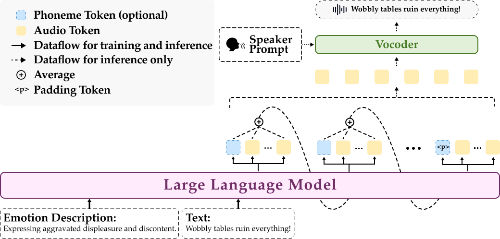

EmoVoice:
LLM-based Emotional Text-To-Speech Model with Freestyle Text Prompting
Paper; Code; Dataset
Abstract Human speech goes beyond the mere transfer of information; it is a profound exchange of emotions and a connection between individuals. While Text-to-Speech (TTS) models have made huge progress, they still face challenges in controlling the emotional expression in the generated speech. In this work, we propose EmoVoice, a novel emotion-controllable TTS model that exploits large language models (LLMs) to enable fine-grained freestyle natural language emotion control, and a phoneme boost variant design that makes the model output phoneme tokens and audio tokens in parallel to enhance content consistency, inspired by chain-of-thought (CoT) and chain-of-modality (CoM) techniques. Besides, we introduce EmoVoice-DB, a high-quality 40-hour English emotion dataset featuring expressive speech and fine-grained emotion labels with natural language descriptions. EmoVoice achieves state-of-the-art performance on the English EmoVoice-DB test set using only synthetic training data, and on the Chinese Secap test set using our in-house data. We further investigate the reliability of existing emotion evaluation metrics and their alignment with human perceptual preferences, and explore using SOTA multimodal LLMs GPT-4o-audio and Gemini to assess emotional speech. Demo samples are available at https://yanghaha0908.github.io/EmoVoice/. Dataset, code, and checkpoints will be released.
Contents
This page is for research demonstration purposes only.
Model Overview

Figure 1: Overview of EmoVoice. LLM receives emotion description and text, autoregressively generating audio token group and phoneme token(optional) in parallel. Audio tokens are converted to waveforms by Vocoder. Input at each decoding step is average embedding of audio token group and phoneme token(optional).
English emotion-controllable TTS
| Emotion | Emotion Description | Text | Audio |
|---|---|---|---|
| Angry | Reflecting an exasperated, weary annoyance underlined with impatience | How many times must I repeat myself before you LISTEN? | |
| Revealing a simmering rage through a tense, irritable growl punctuating each word. | The dog's incessant barking grated on her nerves, like nails on a chalkboard. | ||
| Unveiling an undercurrent of anger masked by an eerie calm, crescendoing in clipped intensity. | Crimson clouds knitted together, a glowering expanse of UNRELENTING fury. | ||
| Conveying a scornful, incredulous anger mixed with urgency. | Is this a JOKE to you? Take it seriously! | ||
| Revealing a deep-seated resentment and a sense of injustice. | “Why do I always have to fix YOUR messes?” he spat. | ||
| Sad | Conveying desperation through a quivering voice and hitching breath. | I know I messed up, but please don't leave—please. | |
| Illustrating a deep-seated despondency that saps strength and hope. | He sat in the corner, head in hands, the picture of forlorn weariness. | ||
| Conveying an undercurrent of sadness masked by a seemingly serene demeanor. | Her eyes were stormy seas, turbulence hidden beneath a mask of calm. | ||
| Projecting a faint, delicate melancholy colored with distant happiness past. | The park used to be full of laughter—now just whispers on the breeze. | ||
| Communicating a deep emotional void, weighted by silence's sharp edge. | She said nothing, yet the unsaid screamed into the lingering night. | ||
| Happy | A spontaneous, shared moment of wonder and joy at nature's beauty. | LOOK at that rainbow! It's breathtaking and perfectly magical. | |
| Uninhibited joy and freedom found in spontaneous, playful moments. | Running through the rain, she felt a childlike elation in every drop. | ||
| Effusing genuine warmth that resonates with a bubbly enthusiasm. | If this doesn't bring a smile to MY face, nothing will—and it absolutely DID! | ||
| Voicing genuine enthusiasm and admiration with vibrant intonation. | You DID it! The painting is breathtaking, capturing sunlight on waves perfectly. | ||
| Reflecting a thrilling sense of accomplishment with upbeat vocal inflections. | We did it—completely aced the project and they loved our ideas! | ||
| Disgusted | Emanating a strong sense of disgust and repulsion in the vocal tone. | The slime oozed from the drain, leaving a slick, abhorrent path. | |
| Describing something with a clear sense of revulsion and unease. | The sight was grotesque, a twisted parody of what it should be. | ||
| Detailing a revolting invasion that triggers internal repulsion. | The bathroom corner hosted a festering colony of insects, revolting and grotesque. | ||
| Voicing an intense and lingering disgust, every word dipped in aversion. | Chewing with her mouth open, the sight was unbearably REVOLTING. | ||
| Depicting a tangible, sensory revulsion to the idea of messiness. | The thought of touching that sticky, syrupy mess makes my fingers curl. | ||
| Fearful | Expressing a high-pitched, tremulous voice betraying unfiltered anxiety. | I heard something! Was it just the cat again? | |
| Eliciting an anxiety-laden atmosphere heightened by soft, sharp tones. | Branches SCRAPED the windows, claws against the glass echoing in the silence. | ||
| Revealing rising hysteria through a trembling staccato rhythm in speech. | Why is the power out AGAIN? I saw something—swear to god—just over there in the dark! | ||
| Projecting a suffocating unease through fragmented, quaky vocal delivery. | Every step forward felt heavier, the oppressive silence practically wrapping around her throat. | ||
| Fostering a sense of escalating panic and unease. | I can hear the footsteps closing in, getting closer and CLOSER. | ||
| Surprised | Embodying an enchanted surprise, akin to discovering a romantic secret admirer. | On my doorstep, a bouquet of roses rested with no note or hint—such mystery! | |
| Generating a sense of awed incredulity, ridden with escalating, breathless vocal surprise. | The sky burst open with green light, unearthly and impossible, bathing the mountains in otherworldly hues. | ||
| Portraying a sense of sudden self-discovery with astonished delight. | Upon trying her hand at painting, she discovered a natural talent within her. | ||
| Highlighting awe with a staccato rhythm and lingering stress on key words. | That cloud just spelled my NAME—how could anyone explain something like THAT? | ||
| Expressing disbelief and surprise at an improbable event. | Are you telling me she actually won the LOTTERY? | ||
| Neutral | Invoking a sense of steady pace, voice unchanging and composed. | The fountain burbles endlessly, casting rhythmic waves across the pond's surface. | |
| Evoking a neutral consistency through the habitual sounds of the city. | Car horns beeped in the distance—a regular pattern of city life. | ||
| Observing the transition in time with an impartial and measured tone. | Shadows stretched long across the field as the day wound to its close. | ||
| Maintaining an even, steady tone without discernible changes in intensity or emotion. | Dust motes drift aimlessly, suspended in the golden sunlight streaming through the open window. | ||
| Narrating routine, rhythmic footsteps without emotional hue. | The hallway echoed with footsteps, a rhythm of daily life. |
Chinese emotion-controllable TTS
| Emotion | Emotion Description | Text | Audio |
|---|---|---|---|
| 开心 | 言语间的喜悦和开心很明显 | 去豆捞坊每次都是愉快的餐饮体验啊! | |
| 言语中尽是喜悦欢喜之意 | 京东六幺八买东西真的好便宜呀,促销结束立刻恢复原价,赚到啦! | ||
| 想起过去的温馨场面，心里很是温暖，开心 | 我的伙伴,童年的快乐,回想起来依然温暖。 | ||
| 语调间掩饰不住的开心快乐的喜悦 | 希研祝你们玩儿得开心哦。 | ||
| 某个节日的到来，倍感开心和欢喜 | 看,国庆到了,妹妹也开心! | ||
| 生气 | 怒火重重，满是气愤 | 你们麒麟帮简直找死! | |
| 嫉妒，不满，生出怨恨情绪。 | 你说谁不要脸呐?你才不要脸呐! | ||
| 教育别人，充满坚定的语气，还带有愤怒 | 受到处罚你可不能怨别人,知道吗,臭小子! | ||
| 发泄积在心中的委屈和气愤 | 你脑子坏了,人妖,还不是你先踩我。 | ||
| 心里生气，不爽 | 昨天晚上的气还没消呢,你少招惹我。 | ||
| 激动 | 急切，激动，表示立场分明。 | 那是因为以前他需要你的支持,所以对你特别好。我哥他坏透了! | |
| 语气激动，语调忿忿不平 | 你瞎说什么,怎么这么没有礼貌。 | ||
| 充满正气，情绪激动 | 没有谁是非谁不可的,以妍,自己的幸福才是最重要的! | ||
| 心中醋意正浓，觉得有被抛弃之感 | 米琦,你出来,我有话要跟你说。 | ||
| 情绪激动警惕为保护她而着急。 | 是为你好,是在关心你!你也明知道,学校一定会追究这件事儿的 | ||
| 伤心 | 怜惜又愤恨，泣不成声，难以控制情绪。 | 在我改变主意之前,在我眼前消失。 | |
| 声音断断续续，口齿不清，难过得哭泣，充满怜悯之心 | 你…算啦,麻烦你还是去看看有什么可以避雨的地方。 | ||
| 内心内疚，泣不成声，情绪无法控制 | 可是,我们就在同一天之内,少了本校的黄金校草和白金校花。 | ||
| 悲哀痛苦，悲伤难过 | 当他死于绞刑架上的时候,比约特再也控制不住自己的悲伤。 | ||
| 伤心不已，悲伤凄凉 | 他如果真的爱你,你就不会这么难过了。 | ||
| 惊讶 | 意外的感觉，感到震撼 | 天呐,跟着她快五年啦,居然她就是冰凌儿小姐。 | |
| 语气惊喜，略带兴奋 | 啊,我没事儿啊,有事儿的是你的衣服呀。 | ||
| 感到又惊又喜，不可思议 | 哇!原来是青梅竹马呀! | ||
| 内心恍然大悟，突然明白 | 原来你一直戴着护腕儿,就是为了掩盖上面的疤痕呀! | ||
| 目瞪口呆、桥舌不下、惊讶的样子 | 居然会为了一个陌生人干出那些傻事。 | ||
| 平静 | 形容端正老实，合乎常理 | 您自个儿算一下,怎么样合算些? | |
| 语气平和，语调平静 | 经检测,那些白色粉末儿是冰毒。 | ||
| 平静的阐述，无情绪 | 稚嫩的嗓音在高音区并不声嘶力竭,似乎还显得游刃有余。 | ||
| 其他 | 傲气十足，对自己有信心 | 没门儿!我以后要靠自己买四轮车。 | |
| 带有佩服的言语 | 好兄弟,你太有才啦!全班同学被你编的故事闹得天翻地覆! | ||
| 感到疑惑，不知该怎么办 | 妈,你在看什么啊?我后面有什么东西吗? | ||
| 心生不满，厌恶。 | 对,就你是知识分子,你好好去你的麻省理工待着,别来烦我。 |
Same Text, Different Emotions
| Text | Emotion | Emotion Description | Audio |
|---|---|---|---|
| Voice is the most natural way of human-computer interaction. | Angry | Revealing a simmering rage through a tense, irritable growl punctuating each word. | |
| Reflecting an exasperated, weary annoyance underlined with impatience | |||
| Sad | Projecting a faint, delicate melancholy colored with distant happiness past. | ||
| Conveying an undercurrent of sadness masked by a seemingly serene demeanor. | |||
| Happy | Uninhibited joy and freedom found in spontaneous, playful moments. | ||
| Reflecting a thrilling sense of accomplishment with upbeat vocal inflections. | |||
| Disgusted | Voicing an intense and lingering disgust, every word dipped in aversion. | ||
| Detailing a revolting invasion that triggers internal repulsion. | |||
| Fearful | Revealing rising hysteria through a trembling staccato rhythm in speech. | ||
| Filling the conversational gaps with an undercurrent of expectant dread, like a held breath. | |||
| Surprised | Portraying a sense of sudden self-discovery with astonished delight. | ||
| Embodying an enchanted surprise, akin to discovering a romantic secret admirer. | |||
| Neutral | Narrating routine, rhythmic footsteps without emotional hue. | ||
| Maintaining an even, steady tone without discernible changes in intensity or emotion. |